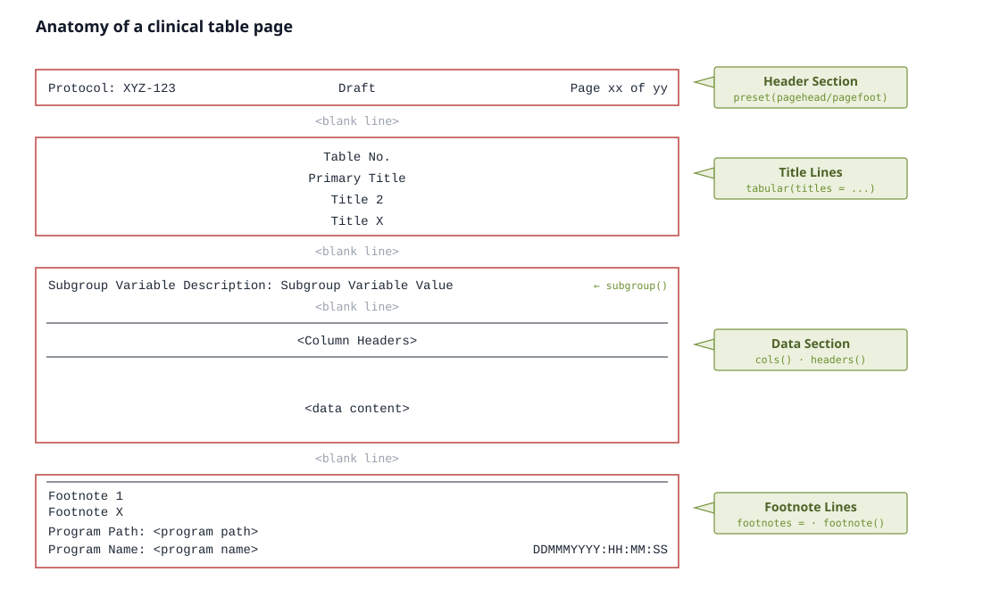

data(cdisc_saf_demo, package = "tabular")
head(cdisc_saf_demo)
#> variable stat_label placebo drug_50 drug_100 Total
#> 1 Age (years) n 86 96 72 254
#> 2 Age (years) Mean (SD) 75.2 (8.59) 76.0 (8.11) 73.8 (7.94) 75.1 (8.25)
#> 3 Age (years) Median 76.0 78.0 75.5 77.0
#> 4 Age (years) Q1, Q3 69.2, 81.8 71.0, 82.0 70.5, 79.0 70.0, 81.0
#> 5 Age (years) Min, Max 52, 89 51, 88 56, 88 51, 89
#> 6 Sex, n (%) F 53 (61.6) 55 (57.3) 35 (48.6) 143 (56.3)tabular turns one pre-summarised, wide data frame into a publication-ready table and renders it natively to RTF, HTML, DOCX, PDF (LaTeX- or typst-compiled), LaTeX, Typst and Markdown — from a single spec, with no Java or Office dependency.
Two things to internalise up front:
- tabular is display-only. It never aggregates, filters, or computes statistics. You bring a summarised data frame (one input row = one display row); tabular lays it out and renders it. (Producing that frame from a cards ARD is the Data in article.)
-
One immutable spec, built with verbs. You pipe a
tabular()object through verbs (cols(),headers(),paginate(),preset(), …) and finish withemit(). Each verb returns a new spec; nothing renders untilemit().
Your first table
Start from a wide frame — here the bundled demographics summary, one row per statistic, one column per treatment arm:
Describe the columns. The spec prints as a live HTML table — this is the same render emit() produces, shown inline:
spec <- tabular(
cdisc_saf_demo,
titles = c(
"Table 14-2.01",
"Demographic and Baseline Characteristics",
"ITT Population"
)
) |>
cols(
variable = col_spec(label = ""),
stat_label = col_spec(label = "")
) |>
group_rows(by = "variable")
spec
Table 14-2.01
Demographic and Baseline Characteristics
ITT Population
| placebo | drug_50 | drug_100 | Total | |
|---|---|---|---|---|
| Age (years) | ||||
| n | 86 | 96 | 72 | 254 |
| Mean (SD) | 75.2 (8.59) | 76.0 (8.11) | 73.8 (7.94) | 75.1 (8.25) |
| Median | 76.0 | 78.0 | 75.5 | 77.0 |
| Q1, Q3 | 69.2, 81.8 | 71.0, 82.0 | 70.5, 79.0 | 70.0, 81.0 |
| Min, Max | 52, 89 | 51, 88 | 56, 88 | 51, 89 |
| Sex, n (%) | ||||
| F | 53 (61.6) | 55 (57.3) | 35 (48.6) | 143 (56.3) |
| M | 33 (38.4) | 41 (42.7) | 37 (51.4) | 111 (43.7) |
| Race, n (%) | ||||
| WHITE | 78 (90.7) | 90 (93.8) | 62 (86.1) | 230 (90.6) |
| BLACK OR AFRICAN AMERICAN | 8 (9.3) | 6 (6.2) | 9 (12.5) | 23 (9.1) |
| ASIAN | 0 (0.0) | 0 (0.0) | 0 (0.0) | 0 (0.0) |
| AMERICAN INDIAN OR ALASKA NATIVE | 0 (0.0) | 0 (0.0) | 1 (1.4) | 1 (0.4) |
To write a file, hand the spec to emit(); the backend is chosen by the file extension (or an explicit format =):
out <- tempfile(fileext = ".rtf")
emit(spec, out) # RTF here; swap to .docx / .pdf / .html / .tex / .typ / .md
file.exists(out)
#> [1] TRUEThat is the whole loop: wide frame → tabular() → cols() → emit() — one spec, any backend.
The pipeline at a glance
Read it left to right. You summarise upstream — with cards/cardx, dplyr, or SAS — into a long ARD, widen that to a display-ready frame with pivot_across(), then hand it to tabular. Inside the package the work happens in three phases (Build → Resolve → Emit), and the same resolved spec emits to every backend, so the HTML you preview and the RTF you ship can never disagree.

pivot_across(), then build, resolve, and emit one immutable spec to every backend.Anatomy of a clinical table page
A submission table is not just a grid of numbers — it is a page with four stacked sections, and a reviewer expects each one in its place. Every tabular verb maps onto a piece of this picture:

-
Header section — the running protocol, optional status, and page x of y, set as page chrome with
preset(pagehead =, pagefoot =). -
Title lines — the table number and up to four centred titles, passed to
tabular(titles =). -
Data section — an optional
subgroup()banner, the column-header band built bycols()andheaders(), then the decimal-aligned data. -
Footnote lines — your static
footnotes =plus any auto-numberedfootnote()markers, then the program path, name, and timestamp.
preset() frames all four by controlling the page geometry (paper, orientation, margins, fonts).
Where to next
The rest of the docs are task-oriented — read the one that matches what you are doing:
-
Data in — turn a cards/cardx ARD (or any long ARD) into the wide frame, with
pivot_across(). -
Structure — columns, headers, BigN, and splitting wide or long tables across pages (
cols(),headers(),paginate(),subgroup()). -
Presentation — titles, footnotes, running headers, and cell styling (
footnote(),preset(),style()). - Recipes — the canonical CDISC-pilot safety and efficacy tables built end to end, each rendered live.
- Output & qualification — the backends, their system requirements, and the CDISC-pilot cross-backend validation.